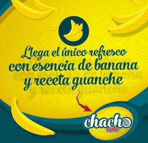

Chacho-Cola

¿Aun estas pensando en probar lo mas canario que probaras nunca? ¡Atrevete con el nuevo sabor de la temporada!
Un sabor canario intenso pero refrescante con un aroma a platano que te dejara 'aplatanao'
- Fabricante: All Ahu S.L
- Lugar de fabricacion: Afganistan
- Formatos de venta: Botellas de 50cl y 1.5L (ambas de plastico)
- Disponibilidad: En stock
- Ingredientes:
- Azucar
- Citrato de cafeina
- Galón de jugo de Lima
- Acido fosforico
- Colorante E593b
- Agua carbonada
- Platano concentrado (maximo 6%)